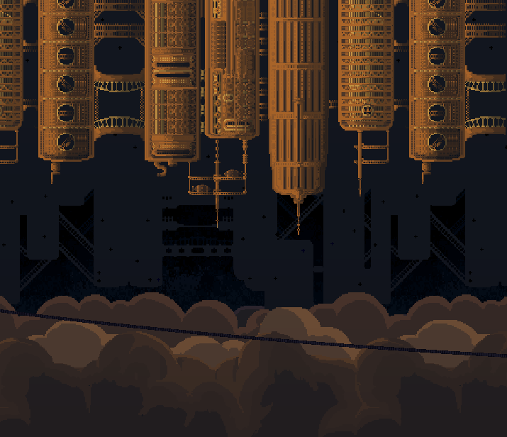
The wind fortress is the first level of the game and is the only outdoor location.
This background art was like 7 days worth of work; each day was like 5 hours of working on the background.
The background actually predates the concept of the game-- the imagery of a hanging city above the clouds was inspired by games I love (Cave Story) and typical steampunk settings. From here and conversations with Seaver we determined a setting plot and lore!
Our clone journeys from the edge of Cassiel to its black heart. This voyage is the Wind Fortress level. Cassiel's nadir is heavily fortified and secured-- but its wardens have degraded over time. Scars of the previous clone rebellion cover the area. So I'm going for like a "James Bond" with this area.
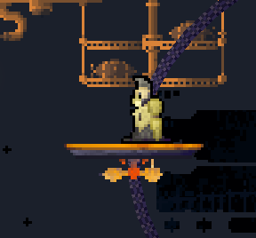
For traversal mechanics, this area will feature moving platforms, ziplines, and tethers! (which work like fireman poles)
I just think the imagery of zipping above the clouds is very cool. The only thing cooler is sailing on the sky (which wont happen probably) For level design, it will be structured very horizontally, interspersed with zipline throughout. It is a "hanging" level; I want it to feel that way.
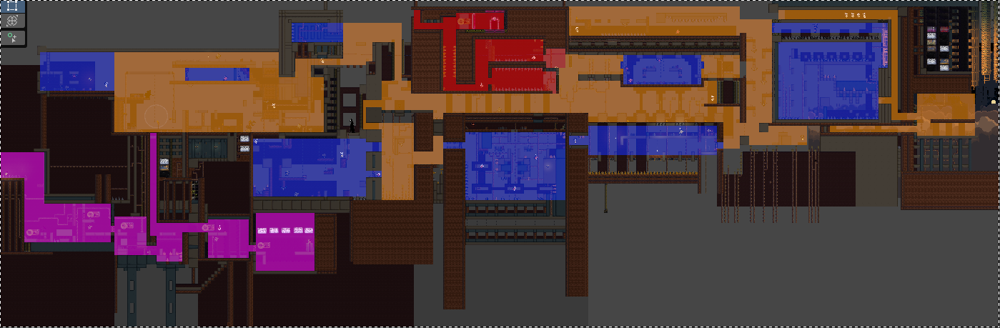
For the lore of this area, its mostly a heavily secured path to Mrs C. The Sentinels have tended to the area, so some things are still functional.
Speaking of Sentinels, a particularly zealous one stands between you and the path forward. In order reach Mrs C and slay her, you must first confront them. When Sentinel is defeated, Mrs C herself jumps on the opportunity, attacking both you and Sentinel with her transmissions. She overwhelms your senses, and Sentinel, in their weakened state, cannot resist Mrs C's controlling influence. Sentinel is possessed, and retreats.
You may still be wondering who the heck this "Sentinel" fellow is, and more information about them will be discussed in the "Characters" section.
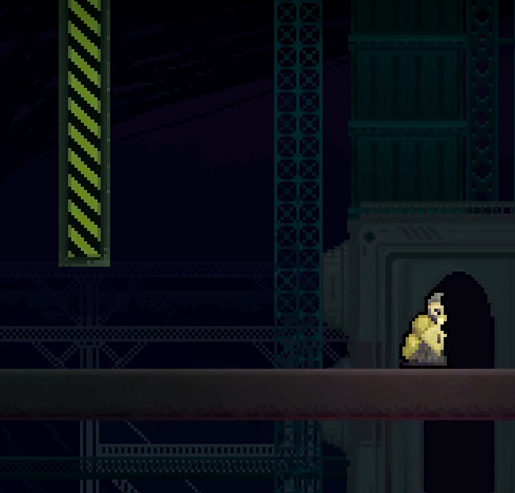
The second area of the game; heavily platforming and puzzle based.
This background took ~2 months! The sketching and planning phase was repeated many times. It's a power-plant themed area, the 3-eyed furnace structures are the power-plants!
There are two competing ideologies present in Steelsmoke. One is the sort of "collective thought" that Mrs C embodies, and the other is raw uncontrolled individualism. This IS represented by a character, but it permeates the story as a SUBSTANCE. "Prometheum" is a force of chaos which holds enormous power. The function of Scorch Station X is to process clone blood, or "Crude Blood". Crude blood powers Mrs C. Mrs C will refine additional Crude Blood into Prometheum, which is Mrs C's main purpose-- to produce Prometheum, and control it.
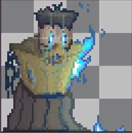
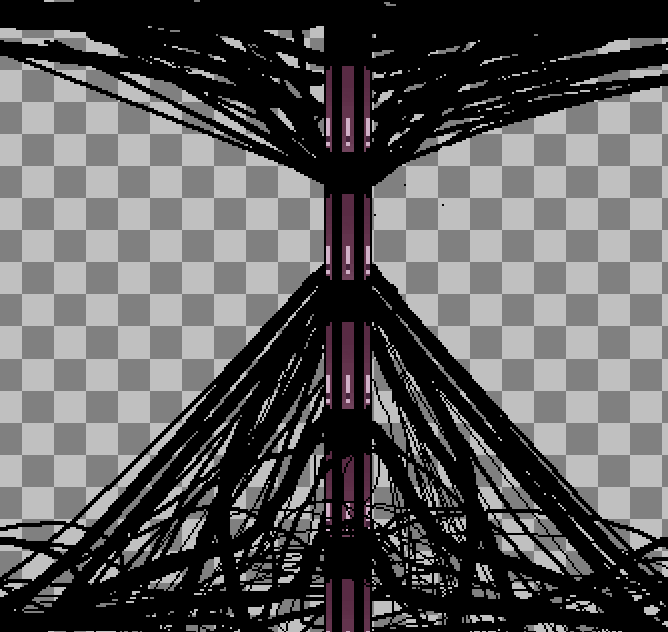
Prometheum; the blazing push forward, pictured alongside the Conduit.
In Cassiel's heart lies Scorch Station, which holds the key path towards Mrs C: the Conduit. The conduit is the main "wire" pumping energy to Mrs C, and its how our protagonist will reach her. However, reaching the Conduit will take enormous risk. In order to reach the Conduit, one must activate the entire plant.
A great titan once wreaked havoc here, so much of the area is destroyed and deactivated-- thats where the "unlit" part comes in. In this area, the player will complete a series of platforming and puzzle sections to open multiple doors.
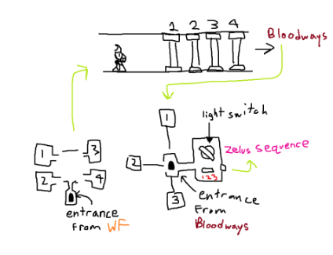
The level design of the Unlit segment.
Each platformer/puzzle section will contain unique S.S.X traversal mechanics. "Fuel
Afterwards, the player will travel towards a foreboding series of doors, and be faced with something terrible. Between the "S.S.X Activation Chamber" and the "Unlit Sector", lies a massive maw. In order to reach the Mrs C, our protagonist must jump in. Which leads us to our next area!
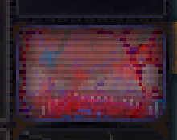
The third area of the game; disorienting and maze-like.
The path towards freedom is paved by suffering. The veins transporting Crude blood and arteries pumping Prometheum have degraded over time, causing the two substances to mix and contaminate the area. This unholy mixture gave rise to a Rot which infests these sewers, infecting any machines unlucky enough to find themselves here. Furthermore, Prometheum and crude blood both have profound hallucinogenic effects; on a machine it's worse.
Usually the Sentinels will maintain and repair whatever is left of Cassiel, but anything near Mrs C and ESPECIALLY the Bloodways is too dangerous; which is why everything is in such gross misrepair here.
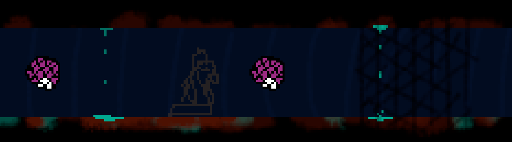
Basic picture of whatthe Bloodways might look like.
Our hero has to endure a really bad drug trip whilst trapped a maze inundated with its people's blood; quite a hellish undertaking. This area is likely the darkest part of the game, maybe followed by Mrs C.
Due to the hallucinogenic effects, the gameplay will be completely changed. Instead of a 2D action-adventure platformer, it will become a top-down adventure. I've always been inspired by psycological/psychedelic horror games like Yume Nikki, so I want to channel that here. Throw in some arcane and disturbing imagery, confusing level layouts, dreary ambience, surrealism. It's a very cool concept for an area.
Unlike every other enemy in the game (minus some Bosses), the enemies in this area are not piloted by Mrs C. Instead they are overtaken by infection.
The look of this area is still a work in progress; I'll probably make use of a high contrast color scheme (red, purple, turqoise, black) to highlight a feeling of surrealness.
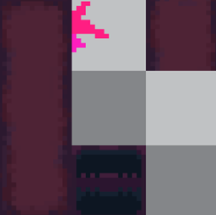
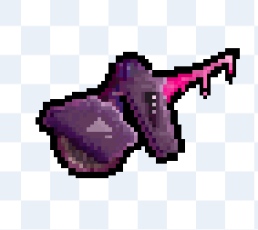
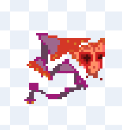
Some concept art of Bloodways enemies and the area itself.
Other than that, this area is still very much in development; most ideas are just that: ideas. Nothing tangible yet.
Anyways, the player eventually works its way through the Bloodways, and emerges alive and unharmed. It is now at the power room, where it can turn on the whole sector and reach the Conduit. Once more, it faces a great risk: awaken Scorch Station X once more, and in doing so, awaken the beast.
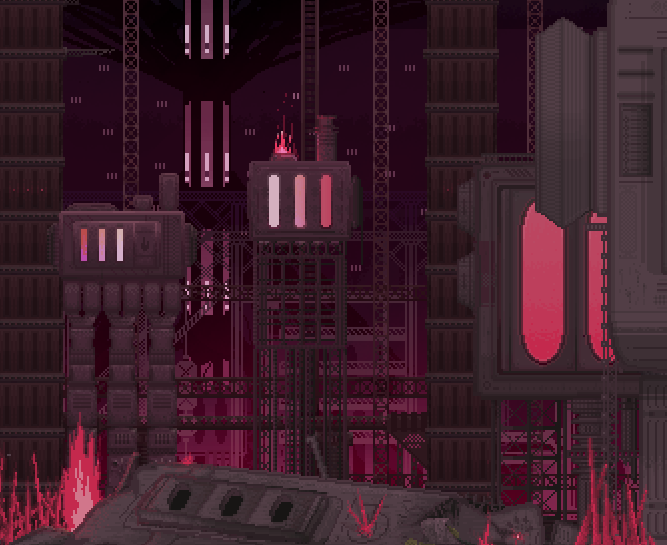
GO GO GO!!!
Remember the titan monster which destroyed and depowered most of Scorch Station X? Well he's not dead-- he's still alive. And activating the station activates him.
This monster is animated entirely by Prometheum-- when there is no structure, nothing to guide the individual, they become chaos.
When the player lights up the power plant, Zelus awakens, and a mad dash for the Conduit begins. This segment is a high octane chase sequence-- reach the Conduit in a certain amount of time, otherwise Zelus will destroy the entire station, and you.
Those traversal mechanics in Unlit Scorch Station resurface here. The player will have to remember what they learned earlier about conveyor belts, fuel, boosters, and more under intense pressure. Isn't that sick?!
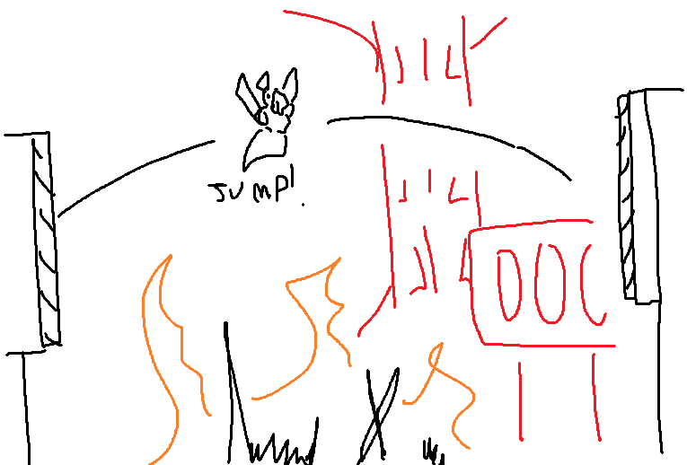
Zelus chase sequence idea!
Finally, the player has braved hell and chaos to reach the Conduit. Phew! But uh-oh-- Zelus is still alive! He crashes into the player before they can leave, and the 2nd boss battle ensues. The two forces of nature battle at the base of the conduit. Who will stand victorious?!
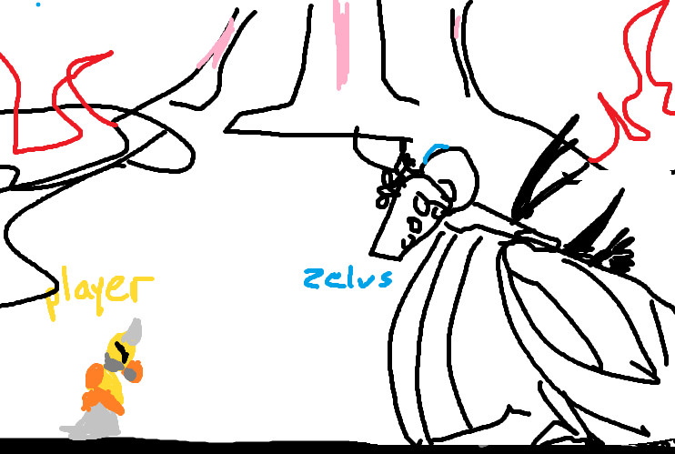
Zelus boss fight concept.
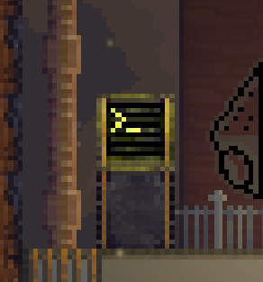
The clone machine.
I won't dive in deep into Mrs C here. Simply put, she is the primary antagonist and villain of the game. Being an impossibly complex structure, she is actually the final level of the game! She is also the final boss.
It was quite the high-octane battle, but our protagonist was able to slay Zelus and use the Conduit to travel up to Mrs C. Before it enters the nexus, the player is treated to a serene sight: The grand face of Cassiel.
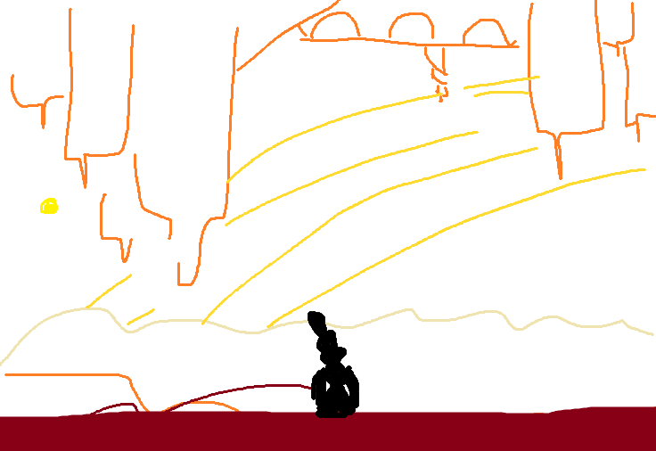
If a game takes place on Saturn, you have to show off its rings.
Before the final boss, there should be a serene moment where the player is allowed to reflect on their journey so far. In this strange sanctuary, a solitary corpse lies: the last clone. Throughout your adventures, you will encounter various corpses from the previous clone rebellion. These corpses will contain black-box recordings, helping shape the world-building.
This corpse's recording, however, is adressed to you. (Spooky!) It congratulates you on your journey so far, and warns you about what lies ahead.
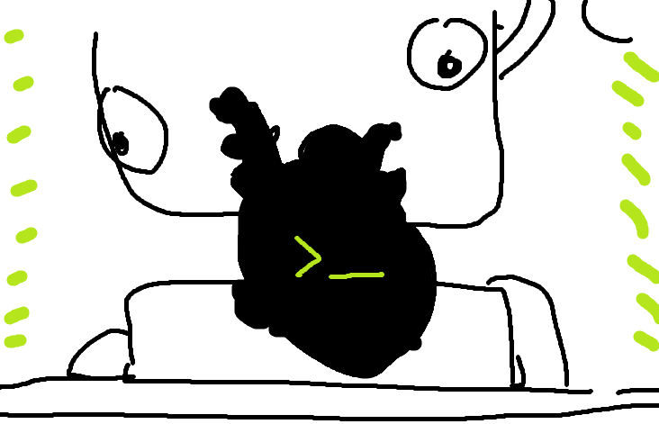
Mrs C should have the only biological/organic traits in the entire game; it helps paint her as alien and eldritch (hinting at her true nature!)
Leaving the balcony, the player enters Mrs C. While the overall structure of Mrs C spans a colossal size, this site is her nexus; her heart. And thus where she can be slain.
There will be a platforming section up to Mrs C's heart, but it will be fairly short and silent.
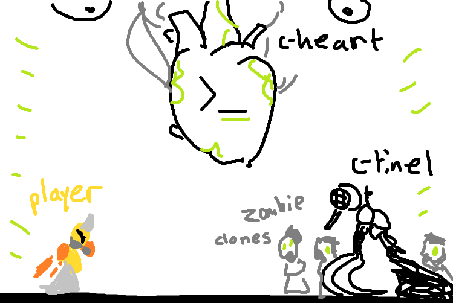
The final boss.
The player is at their final destination, when all of a sudden, the possessed Sentinel (now named C-ntinel) attacks! Fortifying her heart, Mrs C prepares her last stand.
This final boss battle will be a three-way fight: C-ntinel, The Heart, and other Clone puppets. The player will have to leverage everything they've learned so far to win!
C-ntinel will attack by itself, and summon hordes of clones. Periodically The Heart will become vulnerable; when attacked enough Mrs C will be slain.
After Mrs C dies, her remaining clones are released from confinement. The player can rest easy knowing they've avenged their fallen siblings, and freed Cassiel from its eternal torment. Overall, a happy ending.
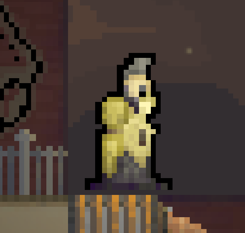
"The Clone" is the protagonist of Steelsmoke. Clones are a subject of torment on Saturn. They are not regarded as human, and mostly just used as livestock to power Mrs C. Before the humans left, they were used for menial labor and tending to Mrs C.
This Clone, the one you play as, faced a similar fate as its siblings. It lie in a cloning vat, barely cnscious and newly born. It was about to be drained of life. But due to the Bloodways's condition, the pipes of Mrs C were breaking down and some Prometheum leaked into The Clone's chamber. All of a sudden, The Clone awakens and breaks out of its prison. It finds itself near a wrathful goddess and surrounded by sleeping/dead versions of itself. Terrified, it runs away. Far far away, to the edges of Cassiel.
But as time passes, it grows weary. All around, The Clone sees corpses of its siblings; people who fought for the right to live. The Clone sees the decaying and forgotten state of Cassiel. The Clone is utterly alone. So it undergoes a change of heart: "I will journey back to my birthplace, " it thinks, "Slay my creator, and free my siblings." So it departs, and the game begins.
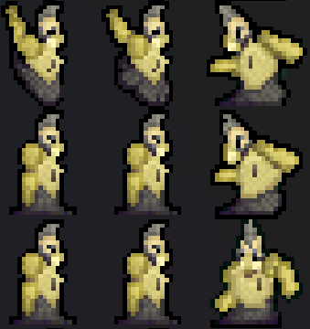
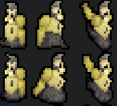
The clone is a demi-human: part machine, and part person. Not quite alive, but... maybe so?
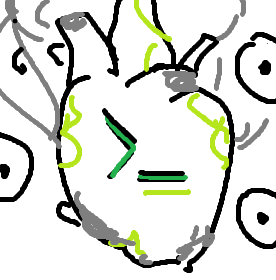
Before you ask, no she's not married. I don't know why she's labelled "Mrs.", its just a moniker that stuck. (it sounds imposing!)
As for what the "C" in Mrs. C stands for, I truly dont know. I think its more fun to leave it ambiguous, and imagine the possibilites.
Mrs. C is the main villain and antagonist of Steelsmoke. Partially built by the humans, she perpetuates her cycle.
First, Mrs. C makes a Clone. Then, she kills that Clone, using its blood to make Prometheum and power itself. She repeats this cycle on a massive scale, killing thousands of clones for hundreds of years. Before the rebellion, she would spit Clones out into Cassiel as per humanities behest. But following the rebellion, this no longer occured. Mrs. C really, REALLY hates Clones. She loved humanity, but hated everything else: her creations, the Sentinels, and ESPECIALLY you.
Similar to the Clones, she is not fully machine. Upon arriving on Saturn, humans detected a series of alien anomalies coming from Saturn's moons. They construct a psychic link--a terminal on Saturn--to integrate into the aliens' hive mind, birthing a new conscious. Mrs C. She also has mind control powers over her children. (Except you, she really doesnt like that.)
Before the clone rebellion, Mrs C would operate listlessly, producing clones for labor and spitting them outside, while harvesting others for survival and Prometheum.
As the game progresses, Mrs C will throw enemies and obstacles in your face, trying to extinguish your flame.
Mrs C makes Clones, but she has the capacity to make anything. Mrs C is the progenitor of every enemy you face. Well, except one.
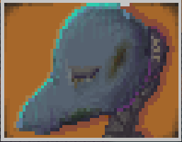
The Sentinels are human-made machines. Specialized for personal purposes, they vary in utility. However, all possess an intense loyalty to the humans.
Being human made, Sentinels possess an innate level of independence, and so Mrs C generally cannot control or influence them.
Thus the Sentinel you face (unlike the Clones, multiple Sentinels are still alive) serves as a foil to you. Sentinel is fighting for the honor and legacy of humanity. They will do whatever it takes to defend and maintain their memory, even if that means protecting something like Mrs C. The Clone is driven by the honor and legacy of its fellow siblings. They will avenge their memory, and destroy Mrs C.
Thus the two clash at the Wind Fortress.
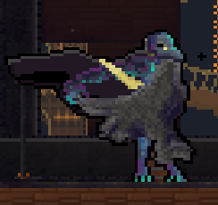
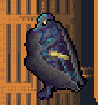
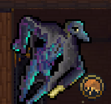
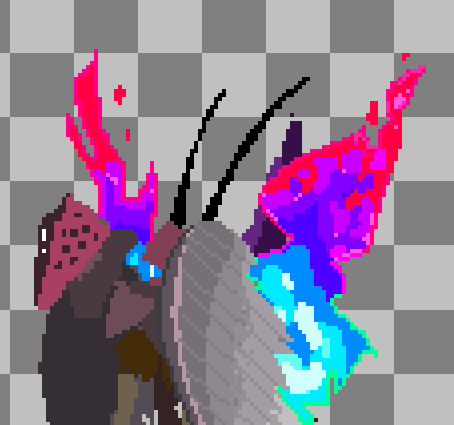
To extinguish the clone rebellion, Mrs C engineered a deadly strike force of machines-- things built to kill. However, this backfired tremendously. They fell into the Bloodways, and encountered unfathomable amounts of Prometheum. In large quantities, Promtheum will mutate something, "maximizing its directive" and disregarding everything else. For the strike force, they all mutated and amalgamated into a chaos titan-- before, he was built to destroy Clones. Now he has mutated to raze everything.
Zelus has willpower, but no mind to control it; he has gone completely mad and is something akin to an animal now.
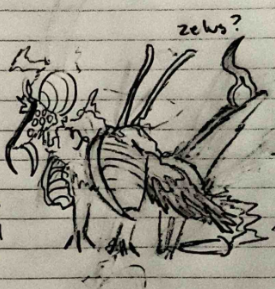
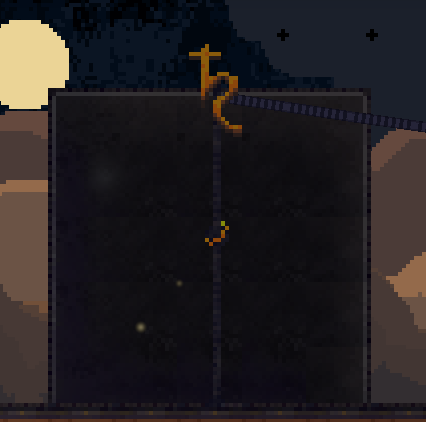
Humanity evolved into a space-faring race, and colonized the solar system. They constructed a colony on Saturn called Cassiel; this colony grew into a grand city which encompassed a vast area. (like the size of Texas) They built the Wind Fortress, they built Scorch Station X, they built the Bloodways, and they built Mrs. C.
After developing, they detected alien signatures on Saturn's moons, and constructed Mrs C to connect with them. From Mrs C, they obtained Prometheum, and used its strong power to leave Cassiel and the Solar System entirely.
Now Cassiel stands as an empty memory; the buildings hang tall but no-one remains except Cassiel's machines. Humanities long forgotten children. Some worship them, like the Sentinels, while others miss them as one does a former friend (Mrs. C), and others couldnt care less. (The Clones)
Humanity discarded its creations, forgetting them as easily as one forgets a rock.
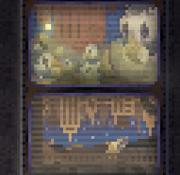
Mrs. C continued making clones, and these clones would operate seemingly without purpose all throughout Cassiel. As time progressed, they grew farther from Mrs C's influence, until they emerged with independent thought and will.
Realizing their fate, as livestock under Mrs C, they banded together and tried to destroy her. However, they failed. The Sentinels and Mrs C's fabrications destroyed them, and their remains dot the sky.
After the Clone Rebellion, Mrs C evolved. She no longer produced clones for labor-- she exclusively made clones to kill them.